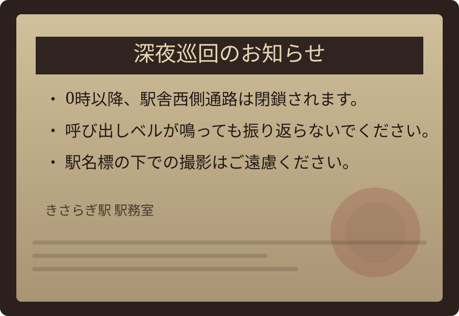

お知らせ
- 2026/03/24 00:19:05 更新: 駅務連絡: 改札左通路は0時以降に順次閉鎖されます。
- 構内時計が停止している場合は、係員の指示に従ってください。
- 3番ホームは足元が見えにくいため、白線の内側でお待ちください。
本日深夜帯は巡回放送を実施しております。ホーム端での長時間滞在はお控えください。
最終自動更新:
駅務掲示
古い掲示板に残されていた巡回案内です。紙面は黄ばんでいますが、印影だけは新しいまま残っています。

構内図
終電後の構内移動は係員案内時のみ可能です。単独での進入はご遠慮ください。
改札
1番線
2番線
3番線
改札口は1か所のみ
公衆電話は現在ご利用いただけません
非常灯が点滅した場合はホーム中央へ
奥の通路は現在封鎖されています。
待合室への入室は22時以降禁止です。